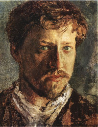
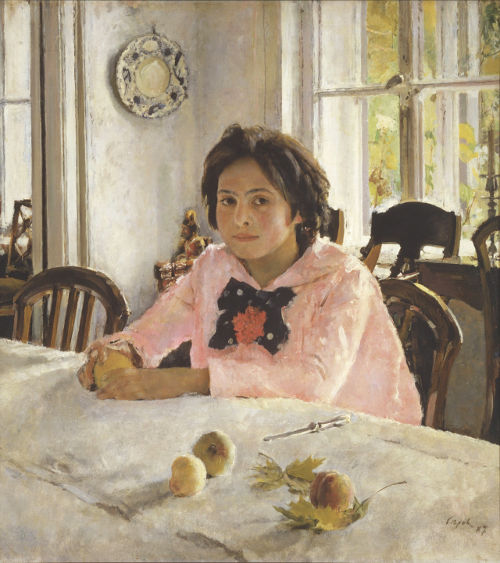

Hi, my name is Valentin Serov. Here's my self-portrait:

I'm a famous Russian painter, one of the premier portrait artists of the early 20th century. I also have a Wikipedia article about myself. It's good to know people still care about me, even though I died in 1911, even before 1917 Russian revolution struck.
One day I woke up and decided my paintings can change the world. So I started to paint. And it felt great.
Girl with Peaches is my most recognized work. Just look at this beauty:

The other day I woke up and decided I should learn a bit of HTML and CSS to have a personal web site. I got my self-portrait and the "Girl with Peaches" images from Wikipedia. They are said to be in public domain, so I hope I didn't violate anyone's copyright.
I have used PSKOV static site generator to create this web site. Send all complaints to PSKOV's authors, not me, I'm already dead.
Have a look at my CV now.